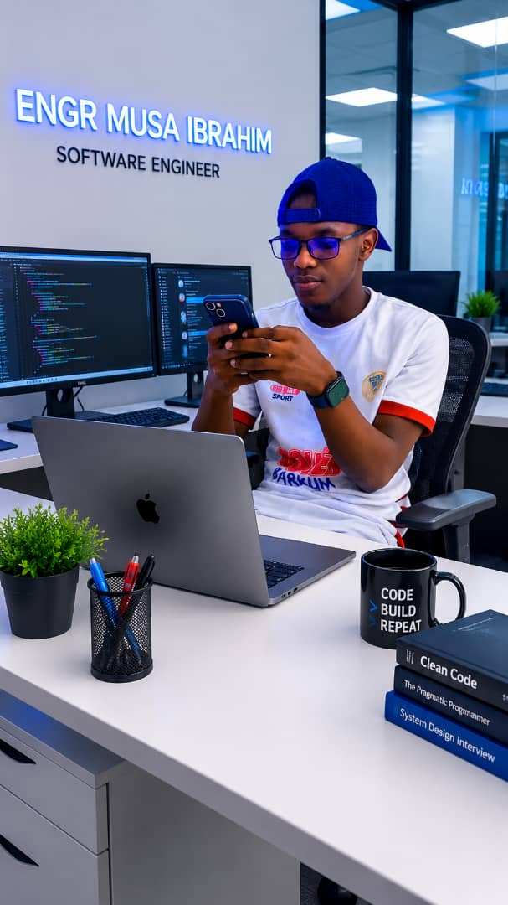

Portfolio Website
A polished, responsive personal website designed to present skills, goals, and professional identity.
Level Two Software Engineering Student
I am Engr Musa Ibrahim, a dedicated software engineering student at Northwest University Kano, passionate about creating impactful digital products and advancing into artificial intelligence.

About Me
I am a focused and ambitious learner who enjoys building modern web experiences, solving programming challenges, and exploring the world of machine learning and intelligent systems. My goal is to become a highly skilled AI engineer who can create tools that make life simpler, smarter, and more productive.
freeCodeCamp Journey
My freeCodeCamp journey has strengthened my foundation in web development, logic, and structured learning. Each completed project has improved my confidence, sharpened my coding discipline, and deepened my love for solving real-world problems through technology.
.png)
My Skills
View My Projects
A polished, responsive personal website designed to present skills, goals, and professional identity.
A modern, responsive e-commerce website built with HTML, CSS.
Creative interface ideas focused on usability, modern styling, and scalable frontend development.
Career Goals
My long-term career goal is to become a specialized AI engineer who builds intelligent systems, develops smart automation tools, and contributes to solutions that solve real-world challenges in education, business, and everyday life.
Collaboration
I am eager to connect with mentors, peers, and teams who value growth, innovation, and quality work. Whether you need support on a project, want to collaborate, or share opportunities, I would be glad to connect.
Contact Me